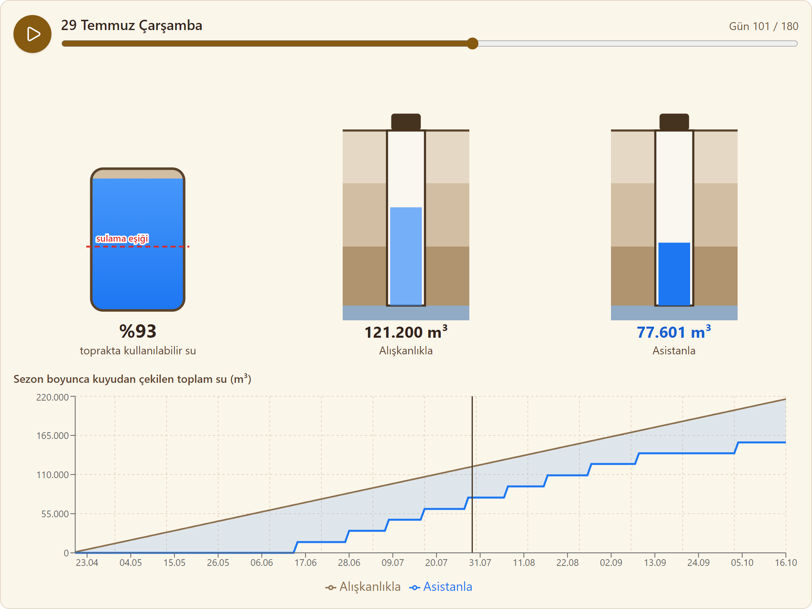

Konya Kapalı Havzası'nda tarımsal sulama, bitkinin gerçek ihtiyacı bilinmeden ve giderek güneş enerjisiyle "bedava" hâle gelen pompalarla yapılıyor; bu da yeraltı suyunun aşırı çekilmesine yol açıyor. Kök neden, çiftçinin tarlasının günlük su ihtiyacını bilmemesi ve pompalama maliyeti düştükçe tasarruf motivasyonunun kaybolmasıdır.
Havzadaki çiftçiler, kırsal yerleşimler, bölgedeki altyapı ve enerji yatırımları ile gıda güvenliği etkileniyor. Bölge önemli bir enerji yatırım alanıdır: Karapınar GES, 2022 sonu itibarıyla 1.350 MWp / 1.000 MWe kapasiteyle işletmeye alındı. Konya, Türkiye'nin önemli buğday ve şeker pancarı üretim alanlarından biridir; bu yüzden sorun yalnızca yerel değil, ulusal gıda arzını da ilgilendirir.
En çok etkilenen grup: kuyusu derinleştikçe pompalama maliyeti artan orta ölçekli çiftçiler. Artan pompalama maliyeti ile verim ve suya erişim kaybı riski en çok onlarda birleşiyor.
Havzada güneş enerjili sulamaya geçiş hızlanıyor. Pompalama ucuzlarken suyu korumaya yönelik bir mekanizma kurulmazsa aşırı çekim riski büyüyebilir; bu yüzden müdahale, geçiş sürerken yapılmalı. 9–20 Kasım 2026'da Antalya'da düzenlenecek COP31, enerji dönüşümü ile su güvenliğini aynı masaya getiriyor.
Teknoloji bu çözümü artık ekonomik kılıyor: Open-Meteo, FAO-56 Penman–Monteith temelli referans evapotranspirasyon (ET₀) verisini ücretsiz sağlıyor. ET₀ tek başına sulama ihtiyacı değildir; ürün katsayısı, etkili yağış, toprak su dengesi ve sulama verimiyle birlikte kullanılınca tarla bazında ihtiyaç hesaplanabilir. Büyük dil modelleri ise bu sonucu çiftçinin anlayacağı dilde anlatmayı ve çiftçinin kendi cümlelerinden tarla bilgisini almayı mümkün kılıyor.
Konya'da, Selçuk Üniversitesi'nde okuyorum. Bu sorunu ilk olarak obruklar ve yeraltı suyu üzerine çıkan haberlerde fark ettim; yaşadığım şehrin çevresinde böyle bir riskin büyüdüğünü görmek konuyu benim için somutlaştırdı. Çözümün, sahadaki çiftçinin gerçekten kullanabileceği kadar basit olmasını bu yüzden önemsiyorum.
| Çerçeve | Eşleşme |
|---|---|
| COP31 | 2035'e kadar elektrifikasyonu %35'e çıkarma: dizel pompaların güneş destekli elektrikli sulamaya dönüşümünü su kaynağına zarar vermeden sürdürülebilir kılmak. |
| Siemens Impact Area | Karbonsuzlaştırma ve Enerji (ana); Kaynak Verimliliği ve Döngüsellik – su (destekleyici). |
| SDG | SDG 6, özellikle 6.4 su kullanım verimliliği (ana); SDG 7 ve SDG 13 (destekleyici). |
https://sunwater-konya.vercel.app/ – kurulum gerektirmez; "Demo tarla yükle" → "Planı hesapla" ile açılır.
Geçen sezonun gerçek hava verisiyle, haritada çizilen veya yazıyla anlatılan tarla için günlük su ihtiyacını FAO-56 yöntemiyle hesaplayan, pompayı güneş üretiminin en yüksek olduğu saatlere planlayan ve mevcut alışkanlığa göre su ve enerji farkını gösteren motor.

| Bölüm | Durum | Not |
|---|---|---|
| Harita, FAO-56 su dengesi, güneşe göre plan, geriye dönük test ve sezon oynatıcı, etki kartları | Çalışıyor | Yayındaki linkte, gerçek Open-Meteo verisiyle. |
| Gemini ile metinden tarla bilgisi ve sade Türkçe açıklama | Kısmen | Yerelde gerçek API ile çalışıyor; yayındaki sunucu fonksiyonu düzeltiliyor (o sırada açıklama hazır şablona döner). |
| Telegram uyarısı ve "Suladım / Yağmur yağdı" geri bildirimi | Kısmen | Yerelde çalıştı; kalıcı depolama ve sabah bildirimi yayında henüz çalışmadı; sesli mesaj yok. |
| Tarla ve alışkanlık değerleri, ürün/toprak katsayıları, yağmur düğmesi (5/15/30 mm), hane karşılığı, CO₂ kartı | Varsayım | Arayüzde "varsayım" etiketli ve düzenlenebilir; gerçek tarlada ölçülmedi. |
| NDVI kalibrasyonu, pompa kontrolü, kuyu sayacı, WhatsApp, kooperatif paneli | Yok | Vizyon; prototipte yer almaz. |
(a) Çiftçinin serbest metnini ("100 dönüm pancarım var, nisan sonu ektim…") yapılandırılmış tarla verisine çevirir; söylenmeyeni uydurmaz, eksik bilgiyi sorar ve kullanıcı onaylamadan hesap yapılmaz. (b) Motorun sonucunu teknik terim olmadan, yalnızca hesaplanmış sayılarla sade Türkçeye çevirir; yanıttaki her sayı motor çıktısıyla karşılaştırılır, tutmazsa hazır şablon kullanılır. Hesaplamaları yapay zekâ yapmaz; bu, etki iddiasını savunulabilir kılar.